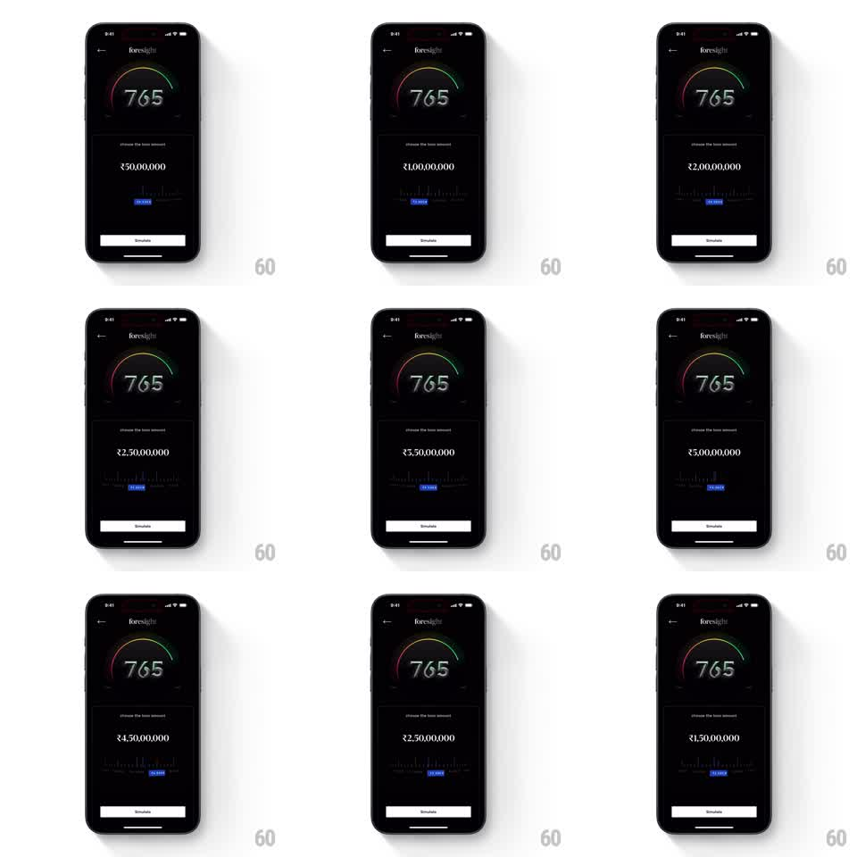

Media
Frame-by-frame

Rebuild this interaction 1:1: CRED's loan amount slider - a dark foresight screen with a credit-score gauge, where dragging a horizontal ruler slider live-updates a huge rupee amount and snaps to tick marks with tactile physics.

Rebuild this interaction 1:1: CRED's loan amount slider - a dark foresight screen with a credit-score gauge, where dragging a horizontal ruler slider live-updates a huge rupee amount and snaps to tick marks with tactile physics. ## Integration Integration: stack-agnostic spec - springs given as stiffness/damping, timed motions as duration + curve; map every value to your framework and animation library of choice. ## Scene Dark finance screen: back arrow + "foresight" title, a semicircular gauge with red-yellow-green arc and a large "765" score, label "choose the loan amount", a very large rupee figure (e.g. Rs 2,50,00,000), a horizontal ruler strip (rows of tick marks, major ticks taller) with a blue pill marker showing the current value, and a white "Simulate" button pinned at the bottom. ## Motion spec Pattern: drag-driven ruler slider with live text, continuous. - Dragging anywhere on the ruler scrolls the ticks horizontally 1:1 with the finger; the center tick is the selected value. - The rupee figure updates every frame from the slider value, formatted in Indian digit grouping; a small blue pill rides the ruler showing the same value. - On release, the ruler keeps momentum and decelerates, then snaps to the nearest major tick with a spring (~400/25), settling in under 300ms. - Each snap fires a light haptic tick. - The gauge and button stay still; only the ruler, pill, and figure animate. ## Calibration - Momentum decays fast (friction ~0.92 per frame at 60fps) - a ruler that glides forever feels slippery, not tactile. - The figure is tabular/fixed-width so the layout doesn't shift as digits change. ## Reduced motion Drag still works (it's the control), but release snaps instantly with no momentum; no haptics. ## Don't miss - Text updates track the raw drag value, not the snapped value - users read the number change as they slide. - The blue pill never lags behind the ruler; it moves in the same transform pass as the ticks.